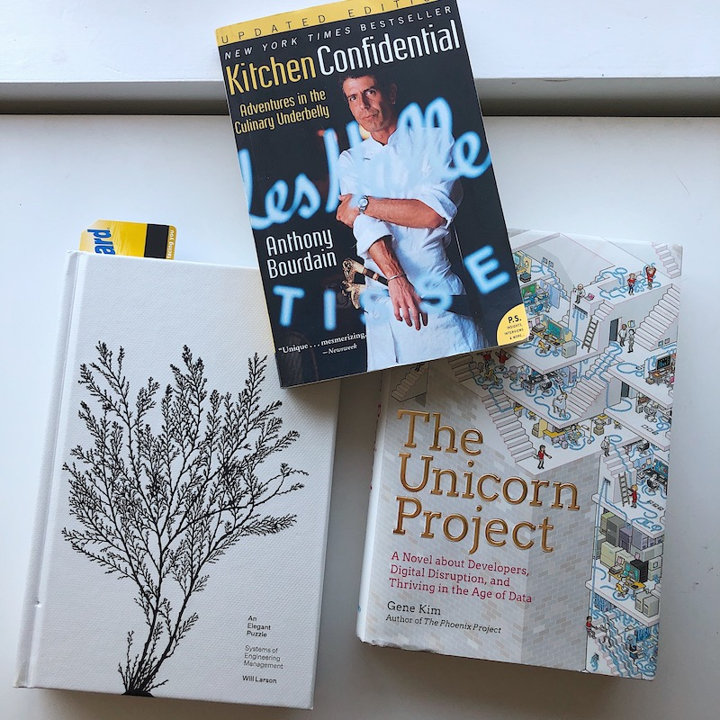

Here's what I'm doing currently.
Currently Located
Right now trying to survive summer in Phoenix, AZ and looking forward to fall when I can enjoy my bike rides again.
Currently Building
I've been working full-time on a site re-platforming using NextJS and GraphQL, along with working through the various steps of productionability. I'm learning more about CDN caching strategy, how to optimize a server-rendered react app for +1M users, and maintaining lots of middleware to manage localization and business rules for a global deployment.
Currently Reading
These are a few of the books I am reading through currently. I also have 'Get Together' and 'Working in Public' published by Stripe Press that I plan to pickup soon. I also purchased a kindle recently and read through Recursion and really enjoyed it.
Newest Accomplishment
Despite being held inside during COVID and Phoenix summer, I've still managed to stay in great yoga & biking shape and finding ways to keep my mental health in check during these stay-at-home days.
I've also been getting better at building things with my hands, and recently built a few hexagon shelves that I'm pretty proud of.